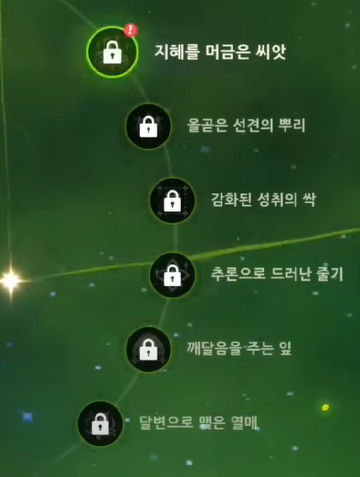

나히다의 원소 마스터리 필요량 계산기입니다.
나히다의 레벨
0돌파
1돌파
2돌파
3돌파
4돌파
5돌파
6돌파
나히다의 무기
무기 돌파 레벨 / 재련 단계
0돌파
1돌파
2돌파
3돌파
4돌파
5돌파
6돌파
1재련
2재련
3재련
4재련
5재련
나히다의 운명의 별자리

0돌파(명함)
1돌파
2돌파
3돌파
4돌파
5돌파
6돌파
기타 요소를 통한 원소 마스터리 수급
모든 항목들은 나무위키 나히다 문서의
4.운용/원소 마스터리 버프 목록
을 참조하였습니다.
사진한짤정리
설명은 내 알빠가 아니니 위에 무지개링크타고 찾아보세요.
풀 원소 공명
교관 4세트
종말 탄식의 노래(5성 활)
떠오르는 천일 밤의 꿈
주의)나히다가 아닌 다른 파티원이 꼈을 경우에만 체크해주세요.
원목의 검(4성 한손검)
숲의 리게일리어(4성 양손검)
여행자/풀속성 돌파 특성 1
알베도 돌파 특성 2
카에데하라 카즈하 운명의 자리 2돌
타이나리 운명의 자리 4돌
닐루 돌파 특성 1
디오나 운명의 자리 6
시카노인 헤이조 돌파 특성 2
콜레이 운명의 자리 4돌